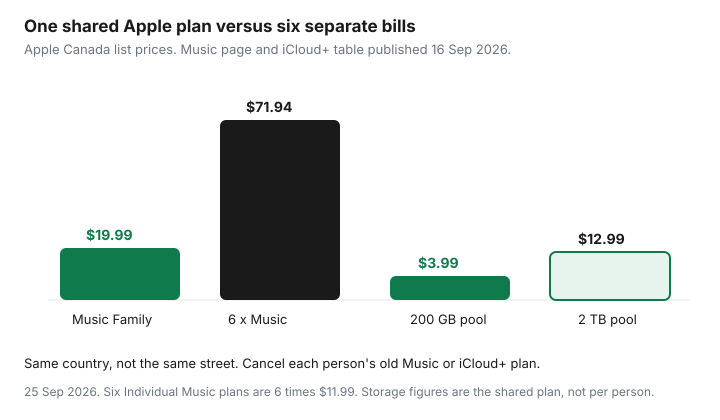

Subscriptions · Canada
Apple Family Sharing in Canada: Share Subscriptions Without Paying Twice
Apple Family Sharing is how a Canadian household stops paying for Apple Music and iCloud+ once per adult. It is also how the organizer’s card quietly picks up a teen’s app subscriptions. The setup is short. The cleanup is the part that saves money: invite the right role, share only the plans that actually share, turn on Ask to Buy before the App Store does, and cancel the personal plans that Family Sharing does not cancel for you.
Prices below were read on Apple’s Canada pages on 25 Sep 2026. The iCloud+ table was published 16 Sep 2026. Spotify’s same-address rule is a different product, on the Spotify Family guide. Storage for a mixed iPhone and Android house is the Google One versus iCloud+ guide.
Disclosure: Apple gift cards are an offer type. Saving Optimizer may earn a commission if we later add a partner link. We do not currently claim an Apple partnership. Education only. No card rankings.
Key takeaways
- The organizer invites up to five people. Everyone must use the same home country on their Apple Account. They do not have to live at the same address.
- Put children in a child account with Ask to Buy. Put spouses and grown kids who pay their own way in as adults. An adult invite without Ask to Buy can spend on the organizer’s card if Purchase Sharing is on.
- Apple Music Family is $19.99 a month. Apple Music Individual at $11.99 does not share. iCloud+ 200 GB is $3.99 and 2 TB is $12.99, one pool for the group.
- Joining the family does not cancel a member’s old Music or iCloud+ plan. Open Subscriptions on that Apple Account and cancel the duplicate.
- You can belong to one family at a time and join only two groups a year. Download anything that depends on the shared iCloud pool before a move-out.
Set Organizer, Adult, and Child/Teen roles correctly
On an iPhone, Apple’s Canada Family Sharing page says the path is Settings, your name, Family, then the add button, then Invite Others. The person who starts the group is the organizer. That person manages membership and, if Purchase Sharing is on, is billed for family purchases. Pick the adult whose card should actually pay. Do not start the group on a teen’s Apple Account because that phone happened to be unlocked.
Three roles matter in a middle-aged household. Organizer is the adult who owns the group and the payment method. There is one. Adult is a spouse or a grown child with their own Apple Account. They keep their own photos, messages, and purchase history. They are not waiting for approval unless you have a separate Screen Time arrangement you both want. Child or teen is anyone who should not be able to spend on the organizer’s card without a yes. Apple lets the organizer create an Apple Account for a child who does not have one, and it lets you invite a teen who already has an account. Turn on Ask to Buy for those members before the first App Store visit. Apple’s FAQ says that if you set up Ask to Buy, the organizer is responsible for approving or denying requests from members who are not yet adults. A parent or guardian in the group can share that approval job. An adult member should not be sitting in a child role, and a 12-year-old should not be invited as an adult because the invite was faster.
A person can belong to only one family at a time, and can join up to two Family Sharing groups in a year. Do not dissolve the group to “reset” a argument. You may not get the seats back the same year. Everyone must share the same home country. A relative whose Apple Account country is the United States cannot join a Canada family, even if they visit. Change the country only if that person has actually moved and understands what happens to their balance and subscriptions. Do not flip a country setting for a weekend.
Which subscriptions share (iCloud+, Apple Music, Apple One, Arcade) and which do not
Apple’s Family Sharing page lists the services the group can use without a second full-price bill: Apple Music, Apple TV, iCloud+, Apple Arcade, Apple Fitness+, Apple News+, and Apple One. Sharing is not automatic for a plan that was built for one person. Read the plan name in Subscriptions.
| Plan | Canada price on the page | Shared with the family? |
|---|---|---|
| Apple Music Individual | $11.99 a month | No. One listener. |
| Apple Music Family | $19.99 a month, up to six people | Yes. Each person gets a private library. |
| Apple Music Student | $5.99 a month | No. It is the student’s plan, for up to four years of verified study. |
| iCloud+ 200 GB / 2 TB | $3.99 / $12.99 a month | Yes. One storage pool, private files. Also 50 GB at $1.29, 6 TB at $39.99, 12 TB at $79.99. |
| Apple One Individual | $22.95 a month | Apple Music on this plan does not share. Apple says TV+, iCloud+, and Arcade on the Individual bundle can. |
| Apple One Family / Premier | $30.95 / $46.95 a month | Yes, the included services, with up to five other people. Family includes 200 GB. Premier includes 2 TB. |
| Apple Arcade | Included when it is part of the shared plan you already pay for | Yes. One subscription covers the group. In-app purchases inside other games do not become free. |

What stays private even when the plan is shared: photos, files, and documents in iCloud, unless someone deliberately shares an album or a folder. Music taste, Fitness+ history, and TV queues stay on each Apple Account. Purchases can be hidden. Not every app is eligible for purchase sharing, and a redemption code is not the same as a shared purchase. In-app subscriptions sold by another company, including a streaming app that bills you directly, are not Family Sharing. If the receipt is from Netflix, Spotify, or Adobe rather than Apple, use that company’s cancel path. Adobe’s early-termination fee, when the plan was bought from Adobe, is the Adobe guide.
Apple One is worth pricing only against the separate plans you would actually keep. Family at $30.95 includes Music plus the 200 GB pool and the other services in that bundle. Music Family plus iCloud+ 200 GB is $19.99 + $3.99 = $23.98 before the TV and Arcade lines. If nobody watches Apple TV or plays Arcade, Apple One is the more expensive way to buy Music and storage. If those services are already on the card, compare their prices in your Subscriptions list with $30.95 and keep the lower total. Premier at $46.95 is the 2 TB version of that same test, not a default for a household that uses 80 GB.
Ask to Buy and purchase sharing for kids app spend control
Purchase Sharing and Ask to Buy solve different problems. Purchase Sharing lets the family download eligible apps, music, movies, and books without buying them again, and it charges the organizer for new eligible purchases. Ask to Buy inserts an approval before a younger member can spend. Apple’s FAQ treats them as organizer duties: you are billed for family purchases when Purchase Sharing is on, and you approve requests from members who are not yet adults when Ask to Buy is on.
Turn Ask to Buy on for every child and teen before you turn Purchase Sharing on. Then make one real request together, so the approval notification is not a surprise at dinner. Decline the first test if you want to see the “no” path. Screen Time, also on Apple’s Family Sharing page, is the tool for limits and Downtime. It is not a substitute for Ask to Buy. A child can still hit a $15 app inside a screen-time window if nobody has to approve the charge.
Two gaps Apple prints on the page. Content downloaded from a family member, and content from a redemption code, is not subject to Ask to Buy. A gift card applied on the child’s account can bypass the approval you thought was universal. An Apple gift card on the organizer’s account is a ceiling you chose. A card loaded onto the child’s account is spending you may not see until the receipt. Keep gift cards on the organizer if the point of the family group is one set of eyes on app spend.
Avoid duplicate iCloud+ or Music charges after inviting someone
Apple’s FAQ is explicit: a new member’s existing subscriptions and purchases remain their own. The invite does not cancel the $11.99 Music plan on a spouse’s Apple Account, and it does not cancel the 200 GB plan a teen started during a “your storage is full” prompt. You now have the family plan and the old plan. Both can renew.
The day someone accepts the invite, sit with their phone. Settings, their name, Subscriptions. Cancel Apple Music Individual if the family is on Apple Music Family or on Apple One Family or Premier. Cancel a personal iCloud+ plan if the family’s pool is large enough for what they store. Apple’s Apple One page notes the exception that matters: if someone already pays for more iCloud storage than the Apple One plan includes, that larger plan keeps billing until they cancel it. Look at used storage before you cancel the larger plan. A 2 TB personal plan should not be cancelled to join a 200 GB family pool if the photos do not fit.
The organizer cannot cancel another adult’s subscription. Apple’s cancel article, published 14 Sep 2026, says a family member’s subscription can only be cancelled from that Apple Account. The click-by-click for the Subscriptions screen is the iPhone cancel guide. Save the confirmation. Then check the card on the next statement. A second APPLE.COM/BILL line is the statement hunt, not a mystery fee.
Leave or remove a member cleanly when kids move out
When a young adult moves out, decide whether they are still in this family on purpose. Same country is enough for Apple. Same household is not required. The reason to remove them is money and authority, not geography: you no longer want Ask to Buy, Screen Time, or their app purchases on your card, and they need a payment method of their own.
Before you remove anyone, have them download photos and files that live in the shared iCloud pool. Files stay private, but the space does not follow them. Apple’s free iCloud tier is 5 GB. A camera roll that fit in a 200 GB family pool will not fit in 5 GB. Give them a weekend, not ten minutes in the driveway. If they were using a child account you created, follow the steps on the Family screen to let them take over that Apple Account. Do not delete the account to “start fresh.” Purchases and the photo library are attached to it.
The organizer removes a member from Settings, their name, Family. A member can also leave. They keep their own purchases. They lose access to subscriptions the organizer was sharing. If they still want Apple Music, they subscribe on their own account that day, or they go without. You can only be in one family, so they cannot stay on yours and start a new one with roommates in the same week without leaving first. And they only get two joins a year. Say that out loud before anyone experiments.
Quarterly audit of Organizer payment method charges
Once a quarter, the organizer opens two screens and writes down what is on them. First, Settings, their name, Subscriptions. You want one Music plan, one iCloud+ or Apple One plan, and a line for each app you recognise. Anything with a renewal date and no user in the house gets cancelled with the end date visible. Second, the payment method on the Apple Account. Confirm it is the card you think it is. A replaced card that failed over to an old number is how a family plan lapses and five people lose the pool on the same morning.
Add the names. Next to each subscription, write who uses it. A $4.99 app with the teen’s name is a conversation, not an automatic cancel, if they still open it. A second iCloud+ line is a cancel. Put the next quarterly date on a shared calendar, the same rhythm as the household audit. Seven days before an annual Apple charge, open the same screen again. An Apple gift card can cover a renewal you have already decided to keep. It should not be the way a forgotten trial survives.
Sources & date stamps
- Apple (CA), Family Sharing, read 25 Sep 2026: organizer plus five people; same home country; one family at a time and two joins a year; Purchase Sharing bills the organizer; Ask to Buy for members who are not yet adults; existing subscriptions remain the member’s; invite path Settings, your name, Family.
- Apple (CA), Apple Music, read 25 Sep 2026: Student $5.99, Individual $11.99, Family $19.99 for up to six people with their own accounts. Apple Music Classical is included.
- Apple (CA), Apple One, read 25 Sep 2026: Individual $22.95, Family $30.95, Premier $46.95, monthly, cancel at least a day before renewal. Family and Premier share included services with up to five others. A larger personal iCloud+ plan keeps billing until cancelled. Support article on the bundle: Apple Music is not shared on the Individual plan; TV+, iCloud+, and Arcade on that plan can be.
- Apple Support (CA), iCloud+ plans and pricing, published 16 Sep 2026: Canada 50 GB $1.29, 200 GB $3.99, 2 TB $12.99, 6 TB $39.99, 12 TB $79.99. Each of those plans can be shared with up to five other family members. Free iCloud is 5 GB.
- Apple Support (CA), “Cancel a subscription from Apple,” published 14 Sep 2026: you cannot cancel a family member’s subscription from your Apple Account.
Frequently asked questions
Do Apple Family Sharing members have to live at the same address?
No. Apple’s Canada Family Sharing page says everyone must use the same home country. It does not require the same street. That is the opposite of Spotify Family, which requires one address.
Will inviting someone cancel the Apple Music plan they already pay for?
No. Apple says a new member’s existing subscriptions stay theirs. After they join, open Subscriptions on their Apple Account and cancel the personal Apple Music or iCloud+ plan if the family plan now covers it. Until that cancel, you can be billed twice.
Does Apple Music Individual share with the family?
No. The shareable music plan is Apple Music Family, or Apple Music inside Apple One Family or Premier. Apple One Individual does not share Apple Music. TV+, iCloud+, and Arcade on an Individual Apple One plan can still be shared.
How many people can join?
The organizer plus five others, six people in total. A person can belong to only one family at a time and can join up to two Family Sharing groups in a year.
Who pays when Purchase Sharing is on?
The organizer’s payment method is billed for eligible apps, media, and books family members buy, and for the shared subscriptions. Ask to Buy can require approval before a child or teen spends. Turn Purchase Sharing on only if that card is the one you mean to use.